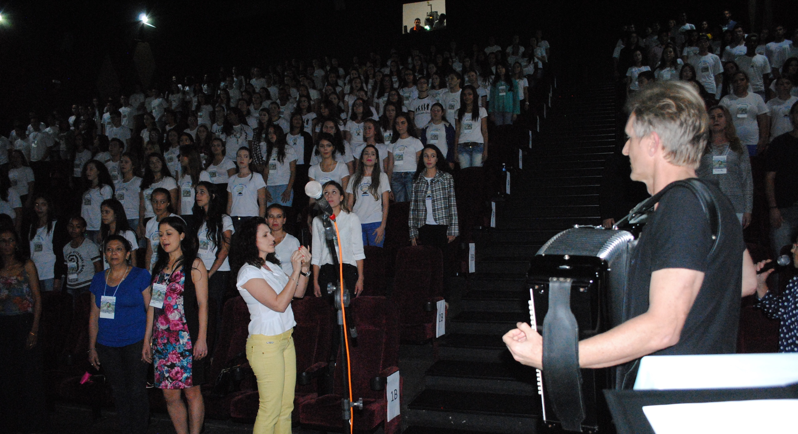

Formação de Docentes
O curso de Formação de Docentes, também conhecido como magistério, é voltado à preparação de profissionais para atuarem na Educação Infantil e nos anos iniciais do Ensino Fundamental. No Colégio Barbosa Ferraz, esse curso é conduzido com responsabilidade, carinho e excelência.
Durante o curso, os estudantes têm acesso a disciplinas como Psicologia da Educação, Didática, Legislação Educacional, Práticas Pedagógicas, Alfabetização e Letramento, entre outras. O estágio supervisionado em instituições de ensino é parte essencial da formação.
Os alunos participam de projetos sociais, atividades culturais, oficinas pedagógicas, leituras dirigidas e práticas em sala de aula que estimulam a empatia, o cuidado e o compromisso com a educação transformadora.
 Voltar à Página Inicial